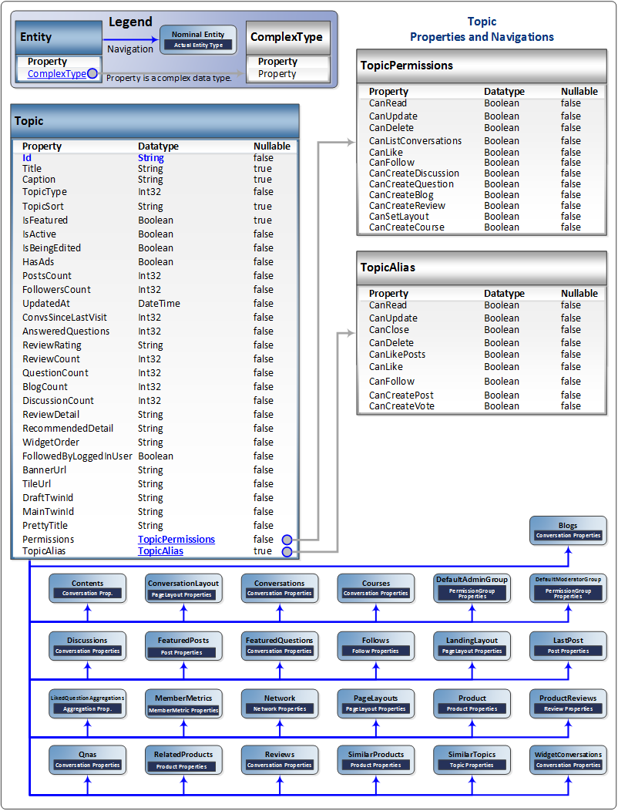

This section documents SAP Jam Communities SAP Jam Communities API calls that involve Topics. Topics are
typically "products" on an e-commerce site, but they could also be "courses" in a
Learning Management System site. Topics are the main, specific object of interest and
discussion.

The Topic entity
Purpose: The Topic entity provides information on the topics (products) on and
e-commerce site.
Properties: The Topic properties are:
- Id: [String] The unique
ID of the Topic.
- Title: [String] The title of the Topic.
- Caption: [String] The caption of the Topic.
- TopicType: [Int32] The type of the Topic.
- TopicSort: [String] The sort information for the Topic.
- IsFeatured: [Boolean] True if the Topic is featured.
- IsActive: [Boolean] True if the Topic is currently active.
- IsBeingEdited: [Boolean] True if the Topic is currently being
edited.
- HasAds: [Boolean] True if the Topic includes advertisements.
- PostsCount: [Int32] A count of the total number of Posts to the
Topic.
- FollowersCount: [Int32] A count of the total number of users who are
following the Topic.
- UpdatedAt: [DateTime] The date and time at which the Topic was last
updated.
- ConvsSinceLastVisit: [Int32] A count of the number of Conversations that
have been started since the current user last visited the Topic page.
- AnsweredQuestions: [Int32] A count of the number of Questions asked of
the Topic that have received answers.
- ReviewRating: [Int32] The average rating value of the Reviews of the
Topic.
- ReviewCount: [Int32] A count of the total number of Reviews of the
Topic.
- QuestionCount: [Int32] A count of the total number of Questions asked
about the Topic.
- BlogCount: [Int32] A count of the total number of Blogs written about the
Topic.
- DiscussionCount: [Int32] A count of the total number of Discussions added
to the Topic.
- ReviewDetail: [String] A summary of the counts for each score level of
the Reviews of the Topic.
- RecommendedDetail: [String] A summary of the counts of those who would
recommend the Topic as well as those who would not.
- WidgetOrder: [String] The order in which the widgets appear in the
Topic.
- FollowedByLoggedInUser: [Boolean] True if the Topic is being followed by
a users with an account (typically an employee of the company).
- BannerUrl: [String] The URL to access the Topic banner.
- TileUrl: [String] The URL to access the background tiled image.
- DraftTwinId: [String] The unique
ID of the copy of the Topic created for editing.
- MainTwinId: [String] The unique
ID of the first copy of the Topic created for editing, if an
additional copy is created concurrently.
- PrettyTitle: [String] The simplified title of the Topic created for
clarity in navigation.
- Permissions: [ComplexType] TopicPermissions data on the permissions set
for this Topic.
- TopicAlias: [ComplexType] TopicAlias data on the aliases used for this
Topic.
Navigations: The Topic entity provides navigations to:
- Blogs: [Conversation] to provide access to information on the Blogs add
to the specified Topic.
- Contents: [Conversation] to provide access to information on the Contents
of the specified Topic.
- ConversationLayout: [PageLayout] to provide access to information on the
PageLayout used for Conversations in the specified Topic.
- Conversations: [Conversation] to provide access to information on the
Conversations added to the specified Topic.
- Courses: [Conversation] to provide access to information on the Courses
related to the specified Topic.
- DefaultAdminGroup: [PermissionGroup] to provide access to information on
the permissions set for administrators of the specified Topic.
- DefaultModeratorGroup: [PermissionGroup] to provide access to information
on the permissions set for moderators the specified Topic.
- Discussions: [Conversation] to provide access to information on the
Discussions that have been added to the specified Topic.
- FeaturedPosts: [Post] to provide access to information on the Posts that
have been featured in the specified Topic.
- FeaturedQuestions: [Conversation] to provide access to information on the
Questions that have been featured in the specified Topic.
- Follows: [Follow] to provide access to information on the Follows that
have been set for the specified Topic.
- LandingLayout: [PageLayout] to provide access to information on the
TaskAssignments associated with the specified Topic.
- LastPost: [Post] to provide access to information on the most recent Post
that has been added to the specified Topic.
- LikeQuestionAggregations: [Aggregation] to provide access to information
on the number of Likes that have been set on Questions in the specified
Topic.
- MemberMetrics: [MemberMetric] to provide access to information on the
Members who have posted or otherwise interacted with the specified Topic.
- Network: [Network] to provide access to information on the Network within
which the specified Topic is located.
- PageLayouts: [PageLayout] to provide access to information on the
PageLayouts used in the specified Topic.
- Product: [Product] to provide access to the Product information used in
the specified Topic.
- ProductReviews: [Review] to provide access to information on the Reviews
of the Product that is the focus of the specified Topic.
- Qnas: [Conversation] to provide access to information on Qnas (Questions
and Answers) Conversations in the specified Topic.
- RelatedProducts: [Product] to provide access to information on Products
that are related to the Product that is the focus of the specified Topic is
located.
- Reviews: [Conversation] to provide access to information on the Reviews
set in the specified Topic.
- SimilarProducts: [Product] to provide access to information on Products
that are similar to the Product that is the focus of the specified Topic is
located.
- SimilarTopics: [Topic] to provide access to information on Topics that
are similar to the specified Topic.
- WidgetConversations: [Conversation] to provide access to information on
the Conversations posted via widgets to the specified Topic.